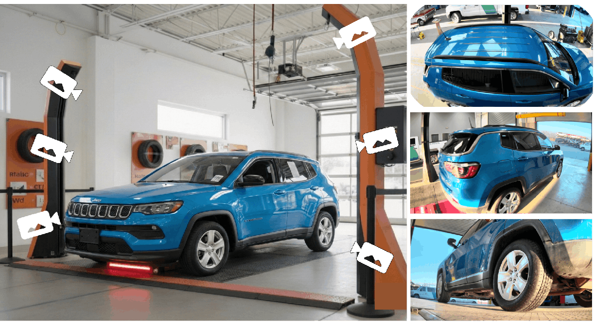
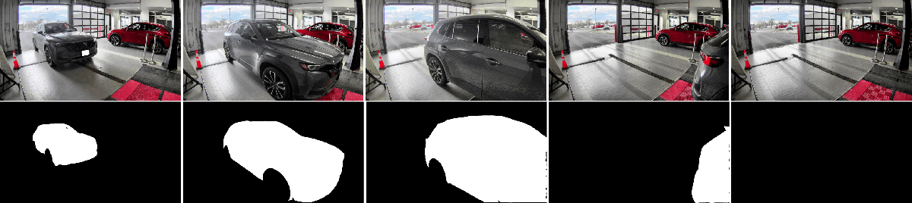
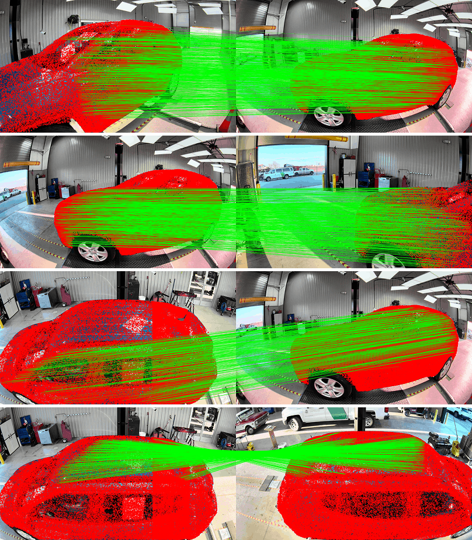
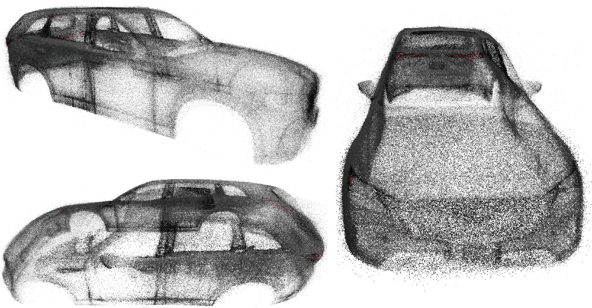
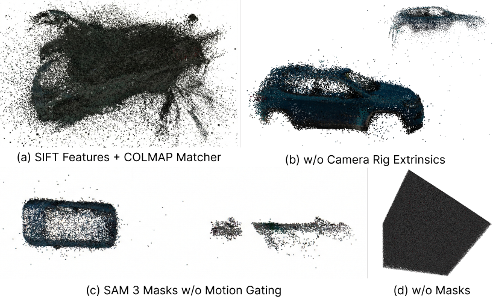
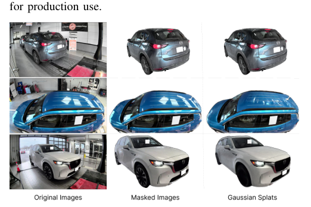

Drive-Through：通过动态场景 SfM 和失真感知高斯溅射进行 3D 车辆外部重建
简单摘要
在线车辆市场和批发拍卖日益依赖远程检测来建立买家信心。车辆外观的逼真3D表示可支持任意视角的环绕式检测,提升买家信心并降低运营商的复检成本。现有高端车辆3D采集方案依赖昂贵的封闭式摄影棚、机械转台和受控照明。本文提出低成本高吞吐的替代方案:利用双柱多摄像头通道式采集架,在活跃杂乱的经销商环境中对运动车辆进行重建。这一场景面临两大技术难题:背景中停放的车辆和车间基础设施构成稠密杂乱;车轮的独立旋转违反极线约束。本文提出一个紧密耦合经典多视图几何与畸变感知3DGS的模块化流水线,从原始未去畸变的4K鱼眼视频中重建具有检测级质量的交互式3D外观模型。


核心创新
1. 运动感知语义隔离:结合SAM 3零样本实例分割与时序运动门控逻辑,在杂乱经销商环境中干净分离运动车辆与静态背景。
2. 畸变原生学习匹配:在原始未去畸变4K鱼眼帧上直接执行稠密匹配,以刚体掩码作为空间置信度先验。
3. 刚体感知全局SfM与泼溅:利用CAD导出的物理先验将14台摄像机刚性耦合为广义传感器,消除宽基线双柱架之间的尺度漂移。
技术细节
围绕 技术总览，我们提出了一个专为多摄像机直通设备量身定制的端到端管道（图 1）。我们构建了一个约束对图来防止这种组合爆炸，同时确保稳健的几何连接性。拟议的端到端 3D 外部重建流程概述。作者这样设计，是为了把这一节的输入、约束和输出关系讲清楚。
鱼眼内在因素和 CAD 衍生的相关钻机外在因素的一次性估计。使用 14 摄像头双柱装置对移动车辆进行驾车通过视频捕捉。失真感知 3D-GS 架构 (3DGUT) 渲染最终的逼真交互式 3D 模型刚性车辆隔离和跟踪。这一步的作用，是把当前结果继续传给后面的模块或训练目标。
3 方法论
围绕 3 方法论，这一节先处理的是 从杂乱的经销商中的车辆简短的驾车视频创建高质量的 3D 模型需要反转参考框架，集成语义消歧、强大的学习对应关系和硬件先验。作者这样设计，是为了先把输入表示、约束条件或中间状态整理成后续模块能直接使用的形式。
接着，论文还会处理 我们提出了一个专为多摄像机直通设备量身定制的端到端管道（图 1）。它的作用不是重复上一层计算，而是把这一阶段得到的结果继续传给后面的更新、渲染或决策步骤。
接着，论文还会处理 我们的管道将视频转换为高质量的车辆 3D 模型。它的作用不是重复上一层计算，而是把这一阶段得到的结果继续传给后面的更新、渲染或决策步骤。
3.1 相机校准和相机装备姿势先验
围绕 3.1 相机校准和相机装备姿势先验，将多摄像头宽基线阵列集成到 SfM 管道中需要精确的几何校准，因为广角建模中的误差会传播为明显的结构漂移。我们首先使用大幅面 ChArUco 板进行离线校准，以估计每个相机的 8 参数鱼眼本征，表示为。对于归一化坐标和径向距离 ，扭曲像素坐标计算如下。作者这样设计，是为了把这一节的输入、约束和输出关系讲清楚。
$$ \theta = \arctan(r),\quad \theta_d = \theta(1 + k_1\theta^2 + k_2\theta^4 + k_3\theta^6 + k_4\theta^8) $$
这条式子描述了鱼眼相机的径向畸变模型：先从半径 r 得到理想角度，再通过高阶多项式把它映射成畸变后的角度。作者需要这一步，是为了把真实广角成像几何准确纳入后续投影计算。
$$ \mathbf{u} = \begin{bmatrix} f_x (\theta_d / r) x + c_x \\ f_y (\theta_d / r) y + c_y \end{bmatrix} $$
这条式子把畸变后的角度重新投到像素平面上，得到最终图像坐标。它对应的正是从相机几何到实际成像位置的最后一步映射。
3.2 相机装置和数据采集
围绕 3.2 相机装置和数据采集，这一节先处理的是 我们使用两柱多摄像头驾车穿过设备收集数据，以捕捉移动车辆的完整外部。作者这样设计，是为了先把输入表示、约束条件或中间状态整理成后续模块能直接使用的形式。
接着，论文还会处理 由于支柱和车辆之间的距离较短，我们使用宽视场镜头。它的作用不是重复上一层计算，而是把这一阶段得到的结果继续传给后面的更新、渲染或决策步骤。
接着，论文还会处理 我们没有对帧进行去畸变，这会严重降低外围分辨率，而是保留原始图像并将这些精确的内在参数直接注入到下游特征匹配、束调整和高斯泼溅过程中。它的作用不是重复上一层计算，而是把这一阶段得到的结果继续传给后面的更新、渲染或决策步骤。
3.3 刚性车辆隔离和跟踪
围绕 3.3 刚性车辆隔离和跟踪，SfM 算法假设静态环境，并且总是锁定高梯度经销商背景而不是移动车辆。为了克服这个问题并反转参考系，我们引入了动态场景消歧管道，将车辆视为静态原点。
3.3.1 运动门控目标选择和锚点锁定跟踪
对于每一帧，我们使用文本提示（“car”）查询 SAM 3，以获得一组实例提案，其中每个都是二进制掩码。为了使选择偏向穿过捕获体积的车辆，我们使用背景减法（MOG2）计算每帧运动支持掩模，然后进行阈值处理和形态清理。在顶级候选锚帧中，我们通过结合运动重叠、时间一致性和弱尺寸先验来选择最佳实例。作者这样设计，是为了把这一节的输入、约束和输出关系讲清楚。
$$ E_{c,t} \;=\; \frac{1}{|\Omega|}\sum_{\mathbf{u}\in\Omega} B_{c,t}(\mathbf{u}), $$
这条式子是在计算某个候选区域的平均响应强度：把区域内部所有像素的响应取平均，得到一个整体得分。作者后面会用这个量判断候选区域到底值不值得保留。
$$ \mathrm{IoU}(A,B) \;=\; \frac{|A\cap B|}{|A\cup B|+\epsilon}, $$
这条式子是在定义一个可直接计算的中间量：右侧把相对位置、方向、权重或比例关系组合起来，左侧则把这个组合结果记成后续模块要反复使用的变量。
$$ \begin{split} &\mathrm{score}(S_{c,t}^{(i)}) = \,6\,\mathrm{IoU}(S_{c,t}^{(i)}, B_{c,t}) +2\,\mathrm{IoU}(S_{c,t}^{(i)}, M_{c,t-1}) \\ &+0.10\,\log(|S|+1) +0.75\,\mathrm{AreaSim} +0.25\,\mathrm{DetScore}, \end{split} $$
放在“方法论”这一部分看。这条式子是在定义一个可直接计算的中间量：右侧把相对位置、方向、权重或比例关系组合起来，左侧则把这个组合结果记成后续模块要反复使用的变量。
3.3.2 刚体掩模结构
围绕 3.3.2 刚体掩模结构，然而，车辆的向前平移与其车轮的旋转相结合。如果将轮关键点纳入束平差中，它们的独立轨迹将违反极线约束 ，从而引起结构漂移。因此，我们明确地从履带车辆掩模中分割并减去车轮掩模以增强刚性。
$$ M^{\text{rigid}}_{c,t} = M_{c,t} \wedge \neg W_{c,t} $$
这条式子通过逻辑与和取反操作，从原始掩码里扣掉被判定为非刚性的区域，得到刚性部分掩码。它的作用是把后续约束集中放在真正满足刚体假设的区域上。
3.3.3 分叉掩模利用
该刚体掩模在随后的 RoMA v2 匹配阶段中充当概率空间置信度先验，引导网络专门对刚性车身上的特征进行采样。然而，由于向客户呈现的最终 3D 模型必须在视觉上完整，因此我们定义了一个明确保留车轮的辅助渲染蒙版。在最终的高斯泼溅优化过程中，这个完整的掩模被向前传递以定义视觉前景。
3.4 特征匹配
3.4.1 图像对图生成
围绕 3.4.1 图像对图生成，在多相机捕捉系统中匹配特征的计算成本很高。我们构建了一个约束对图来防止这种组合爆炸，同时确保稳健的几何连接性。这种有界度构造将匹配对的数量从 减少到 ，即固定窗口的线性输入，同时为鲁棒的装备感知 SfM 保持足够的连接性。作者这样设计，是为了把这一节的输入、约束和输出关系讲清楚。
$$ \mathcal{E}_{\text{spatial}} = \{ (I_{k,t}, I_{j,t+\Delta}) \mid \mathbf{A}_{k,j} = 1, \Delta \in [-K, K] \} $$
这条式子定义了空间关联边集：只有满足邻接关系的视角对，并且时间差落在给定窗口内，才会被连成一条空间约束边。它对应的是跨视角一致性要在哪些样本对之间施加。
$$ \mathcal{E}_{\text{temporal}} = \{ (I_{k,t_1}, I_{k,t_2}) \mid |t_1 - t_2| \leq \tau \} $$
这条式子定义了时间关联边集：同一视角下，只要两个时刻相距不超过阈值，就会被纳入时间一致性约束。这样模型就能在局部时间窗口里持续追踪变化过程。
3.4.2 学习到的特征匹配
鱼眼镜头畸变和汽车油漆的高反射、镜面特性相结合，使得传统的特征提取器变得不够充分。我们使用 RoMA v2，这是一种密集学习匹配器，可以在这些具有挑战性的表面上生成稳健的匹配。如果在网络推理之前对帧进行裁剪或屏蔽，则变压器层将失去解决对称汽车面板上的歧义所需的全局视觉上下文。作者这样设计，是为了把这一节的输入、约束和输出关系讲清楚。
$$ \tilde{O}_A(\mathbf{u}) = O_A(\mathbf{u}) \cdot M^{\text{rigid}}_A(\mathbf{u}) $$
这条式子把前面若干观测、条件或中间特征，经过一个显式模块映射成新的状态变量。它的意义在于把复杂流程压缩成清晰的函数接口，方便后续模块继续消费这个中间结果。
3.5 运动结构 (SfM)
围绕 3.5 运动结构 (SfM)，增量 SfM 按顺序注册图像，当仅依赖镜面移动车辆的视觉特征时，这可能会导致在宽物理基线上出现比例漂移。我们使用具有集成硬件先验的全局 SfM 策略来构建精确的点云。通过使用全局映射器，我们同时优化 3D 结构和相机姿势网络，立即闭合两个支柱之间的循环。作者这样设计，是为了把这一节的输入、约束和输出关系讲清楚。
3.6 高斯泼溅
我们过渡到密集的体积表示，以合成车辆外部的逼真、交互式新颖视图。3DGUT 使用无迹变换 (UT) 取代了这种近似，该变换支持在 SfM 期间优化的高度非线性鱼眼投影。我们使用完整的车辆掩模（包括车轮）来监督 3DGUT 优化，以确保最终 3D 模型的视觉完整性。作者这样设计，是为了把这一节的输入、约束和输出关系讲清楚。
实验结论
在装备感知束调整收敛后，我们跟踪了传感器与装备变换的偏差，以评估 CAD 导出的外部先验的稳定性 。由于我们不对图像进行硬裁剪，因此网络保留了解决对称汽车面板上的歧义所需的全局视觉上下文。烧蚀引起的稀疏点云失效模式。
4.1 相机校准
我们的实验框架是建立在从运营经销商捕获的数据的基础上的，以保持现实世界的相关性。我们采用双柱成像系统，每个柱上装有七个摄像头阵列。在装备感知束调整收敛后，我们跟踪了传感器与装备变换的偏差，以评估 CAD 导出的外部先验的稳定性 。
4.2 数据采集和部署条件
我们使用部署在活跃经销商服务通道中的两柱 14 摄像头设备（图 1）。我们收集了涵盖不同几何形状（轿车、SUV、卡车）和油漆饰面的独特车辆的数据集。鉴于我们的捕获率为每秒 10 帧 (FPS)，每个车辆实例都会生成一个未压缩 lazy' decoding='async' />
4.3 刚性车辆隔离和跟踪
车辆掩模在单个摄像机视图中的时间进展。运动门控 SAM 3 分割可识别主要移动目标，同时完全抑制密集的经销商背景和停放的干扰车辆。当车

alt='Figure 3:' loading='lazy'lazy' decoding='async' />
4.4 特征匹配
应用我们的刚体掩模和后过滤算法后的 RoMA v2 对应关系。掩蔽抑制了高梯度静止 6638v1/figure4_full.png' alt='Figure 4:' loading='lazy'lazy' decoding='async' />
4.5 运动结构
我们评估所提出的管道

ig' src='../assets/2603_26638v1/figure5_full.png' alt='Figure 5:' loading='lazy'lazy' decoding='async' />
| Metric | tabular[c]@c@w/o Camera |
|---|---|
| Intrinsics | — |
4.6 高斯泼溅
保留的地面真实帧和我们渲染的输出之间

模产生了出色的splat（表 1）。| Metric | tabular[c]@c@Standard 3D-GS |
|---|---|
| (Undistorted) | — |
理解评价
如果把这篇论文放回问题背景里看，它真正的价值在于：汽车外观的高保真 3D 重建提高了买家对在线汽车市场的信心，但在杂乱的经销商得来速中生成这些模型提出了严峻的技术挑战。这说明作者不是只补一个局部模块，而是在重新组织问题该怎样被解决。
最能支撑这个判断的，还是实验给出的证据：我们提出了一个利用两柱摄像机装置的端到端管道。换句话说，这些设计并不只是概念上更完整，而是实实在在改变了最终结果。
当然，它离真正成熟的方案还有距离：当前方案的局限在于它仍然受制于计算资源、输入质量或场景复杂度，距离真正稳健的大规模部署还有差距。后续更值得继续推进的方向，是 未来的工作将集中于将自动异常检测直接集成到 3DGS 体积中，以简化外部缺陷的识别。